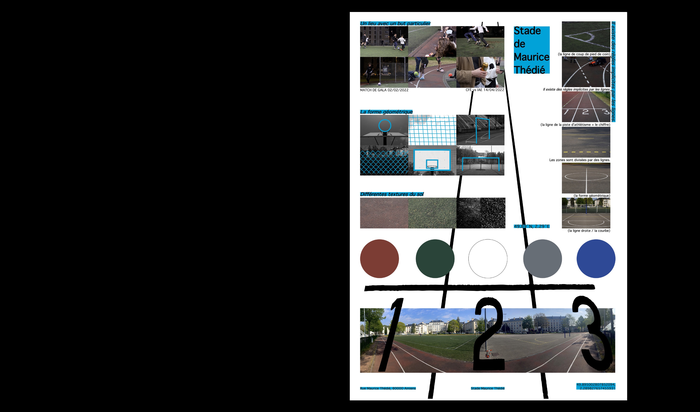
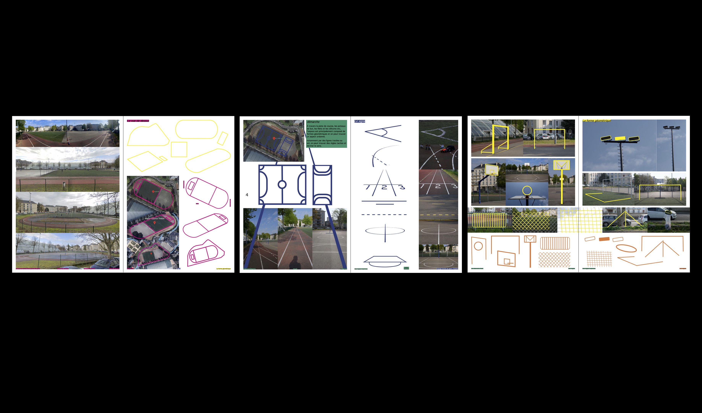
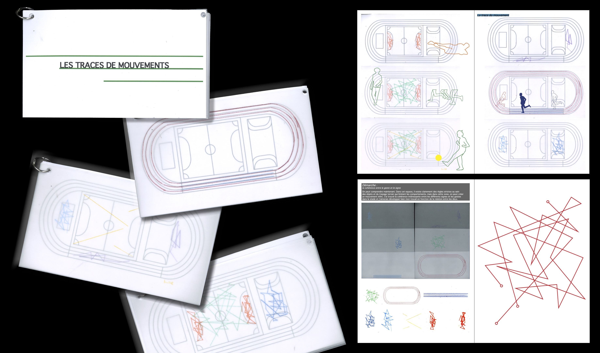
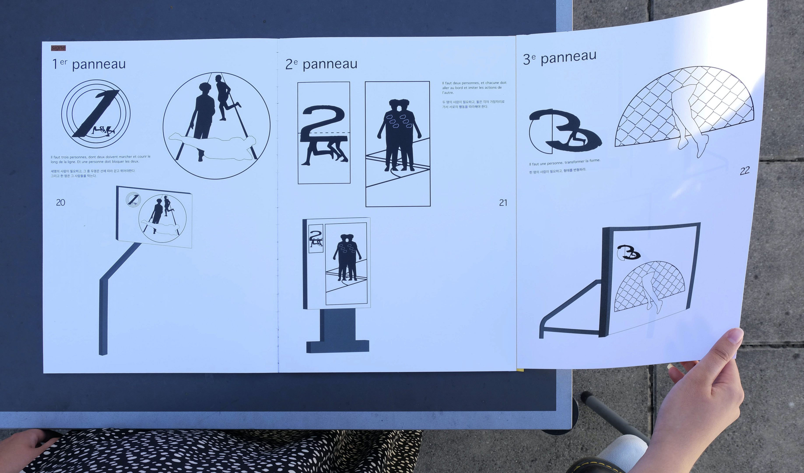
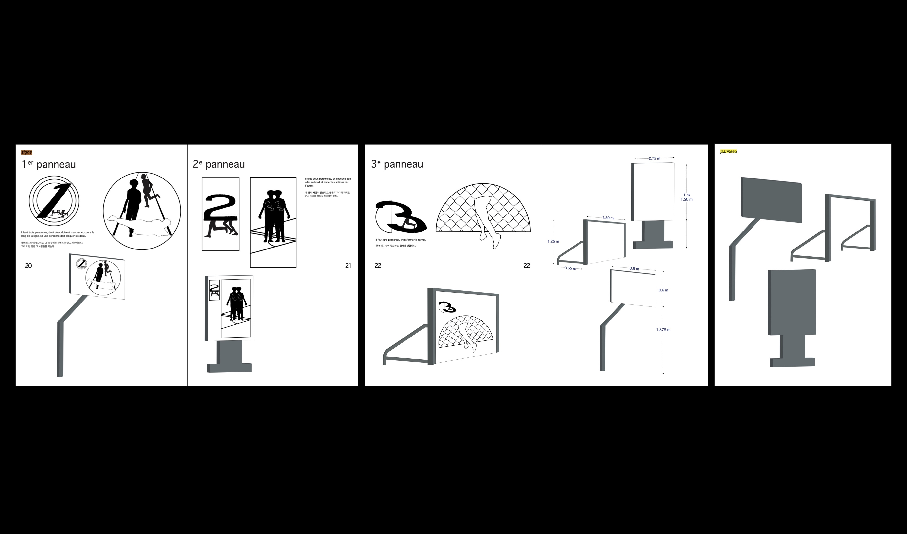
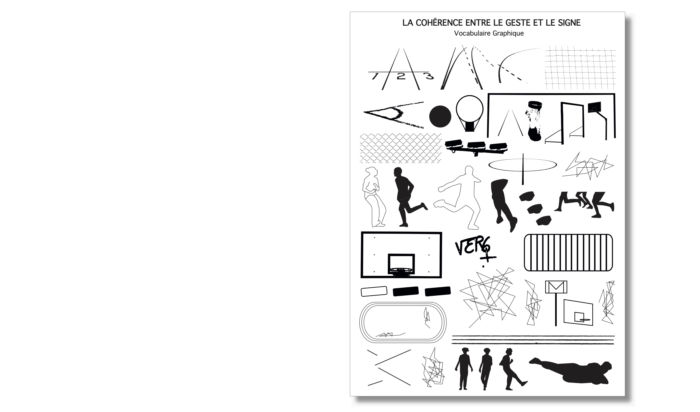
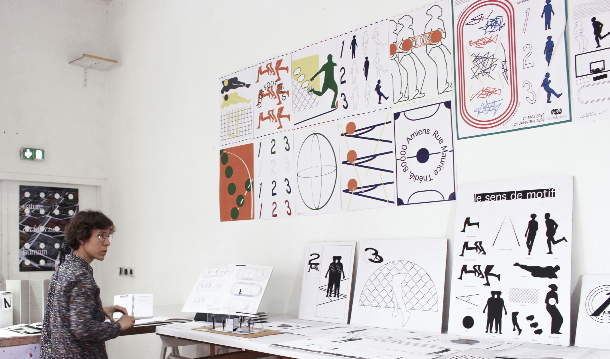

@dpohyootoon_
New Rules
Visual Identity, Edition, Poster, Objet, Maquette
2022
L’identité visuelle du Stade de Maurice Thédié à Amiens. Il existe divers éléments géométriques pouvaient être trouvés. Le terrain de traçage du sol, des poteaux de but, des filets et des clôtures, etc. Et trouvé une règle implicite à partir de ces lignes et objets. On pourrais dire que les lignes et les objets dans le stade régissent notre comportement. Je me suis intéressée à ce point, J’ai donc pris le sujet comme la cohérence entre le signe et le geste du corps et je l’ai développé.












